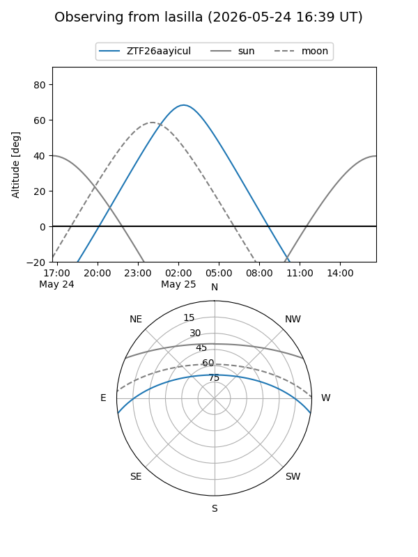
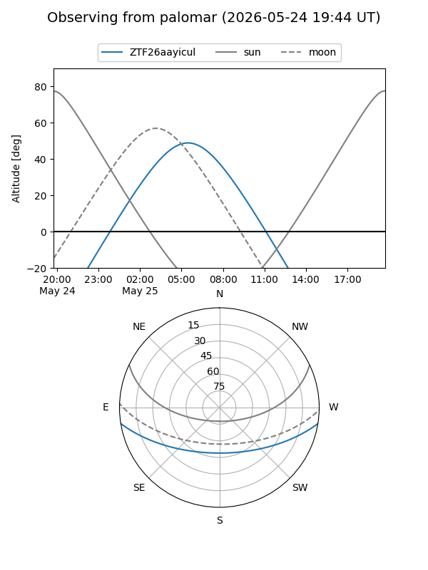

ZTF26aayicul
Target ZTF26aayicul at 2026-05-25 07:23
Aliases and brokers:
lsst-FINK: link
lsst-Lasair: link
lsst-ALeRCE: link
ztf-FINK: link
ztf-Lasair: link
ztf-ALeRCE: link
alt names
ZTF26aayicul (ztf,fink_ztf)
Coordinates:
equatorial (ra, dec) = 207.5933,-7.58303
equatorial (HMS+DMS) = 13:50:22.40,-07:34:58.90
galactic (l, b) = (327.3779,+52.46892)
Flags:
Photometry:
last ztfg=18.99
1 ztfg detections
Lightcurve
Visibility


Additional plots